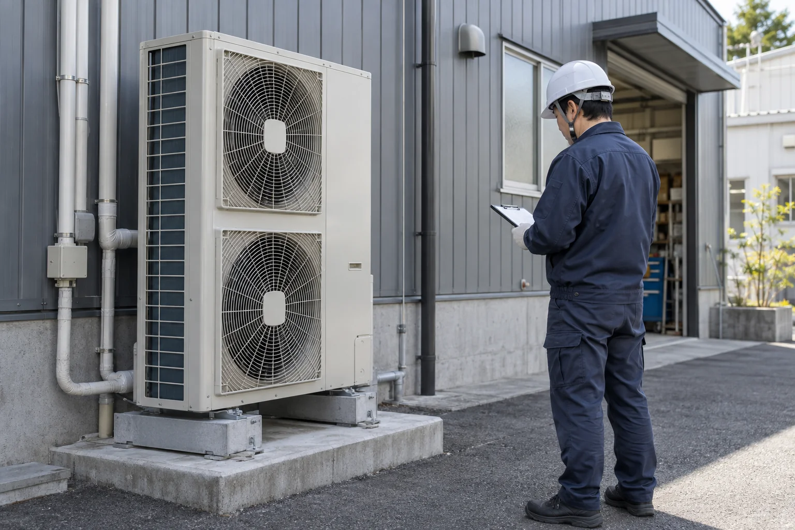
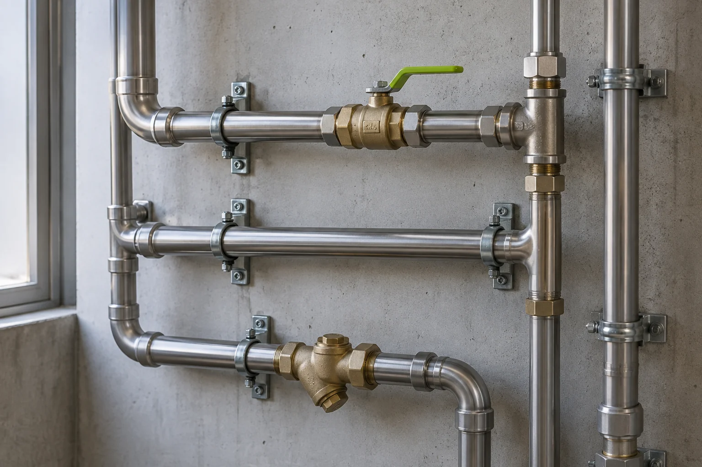
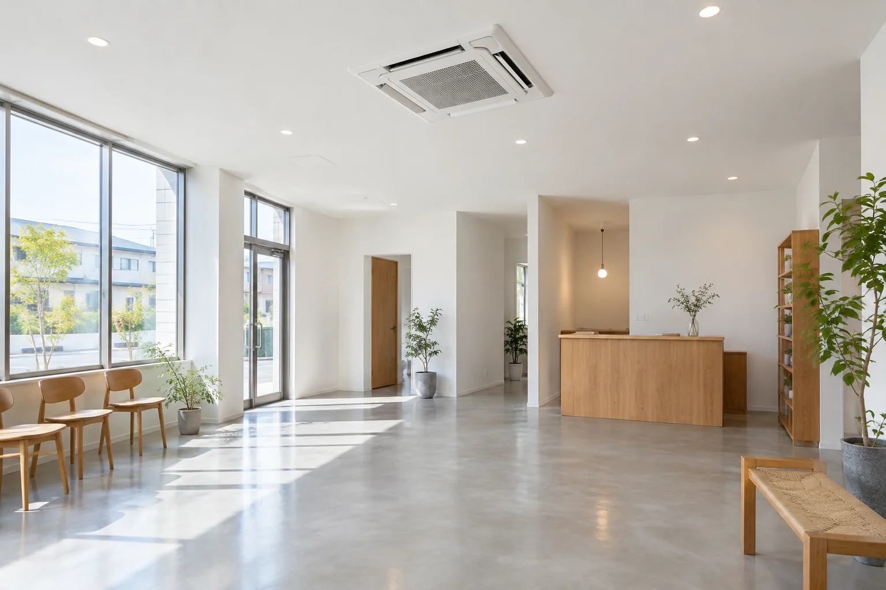
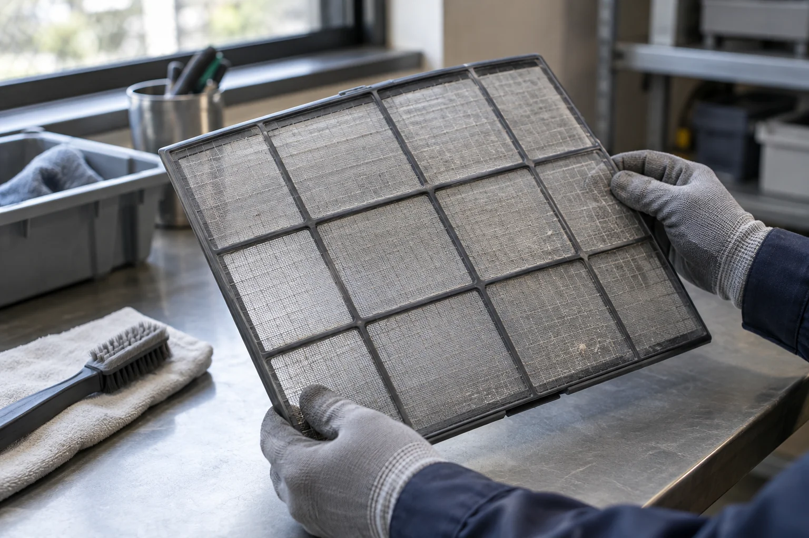

空調設備
業務用エアコンの入れ替え・新設、効きが弱いときの点検。部屋の使い方から、必要な設備を考えます。
店舗 / 事務所 / 小規模施設
01 / WHAT WE DO
対応する工事「どこに頼めばいいんだろう」。
そんなときに迷わないように、
お手伝いできる範囲をお伝えします。

業務用エアコンの入れ替え・新設、効きが弱いときの点検。部屋の使い方から、必要な設備を考えます。
店舗 / 事務所 / 小規模施設水まわりの設備交換、給水・排水配管の改修。気になる水漏れは、発生場所と状況から確認します。
設備交換 / 配管改修 / 不具合の確認フィルターの汚れや異音など、小さな変化の確認も。設備の状態に合わせて、手入れや更新をご提案します。
状態確認 / お手入れ / 更新の相談機器や建物の条件により対応できない場合があります。ガス・電気の専門工事や大規模工事は、必要な専門業者との連携を含めて事前に確認します。
02 / IN THE FIELD
想定した施工例工事のあとに続く時間を大切に。
こんなご相談を想定しています。

CASE / 01店舗の改装に合わせた空調更新を想定。人の居場所や間取り、営業時間を確認し、機器の配置と工事の段取りを考えます。

CASE / 02「最近、風が弱い」というご相談を想定。使用状況と汚れを確認し、お手入れで対応できるか、修理が必要かを整理します。
※ 掲載内容はサービスの伝え方を示すサンプルです。実際の施工実績ではありません。写真はすべて生成画像です。
03 / CLEAR ESTIMATES
費用の考え方「何に、いくらかかるのか」。
わかる見積もりから、はじめます。
同じ機器の交換でも、設置場所や配管の状態で工事の内容は変わります。現地の条件を確認し、必要な作業と費用の内訳をご説明する想定です。
能力や機種、必要な配管・部材。使う場所に合う仕様を確認します。
既存配管の状態、搬入経路、高所作業の有無で必要な工程が変わります。
既存機器の撤去・処分、養生、電源工事などを項目ごとに整理します。
追加の作業が必要な場合も、内容と金額を確認してから。
出張・調査費の有無、見積もりに含む範囲、工事時期は、ご依頼前に確認する項目です。
04 / STEP BY STEP
ご相談から工事までお困りごと、設置場所、希望時期をお聞きします。
機器と建物の状態を見て、必要な工事を整理します。
内容と費用をご説明。ご納得いただいてから日程調整へ。
施工後は動作を確認し、使い方とお手入れをご案内します。
05 / QUESTIONS
「いつから」「どんなときに」「何が気になるか」がわかれば、相談内容を整理できます。異音や水漏れなどの状況を、わかる範囲でまとめておくとスムーズです。
わかる範囲で大丈夫です。機器全体と、手の届く安全な場所にある型番ラベルの写真があると確認しやすくなります。無理にカバーを開けたり、高い場所に登ったりする必要はありません。
工事中に設備を止める時間、作業音、立ち入りが必要な範囲を確認します。営業への影響と現地の条件を踏まえて、日程や段取りを相談する想定です。
LET’S GET PREPARED
専門用語でなくて、大丈夫。
この3つがあると、お話が進めやすくなります。
ここは架空の設備会社の制作デモです。
設備工事の受付は行っていません。